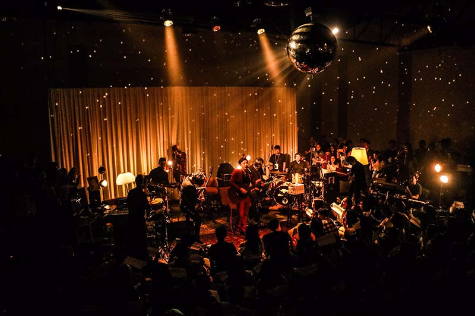

Scenes
The main scene
The biggest names appear on the main scene. It is famous "Arena the Grande" where many famous musicians performed such as J.J. Glod, Helmut Belliso, The Rusters etc.
The area has fantastic acoustic, can hold up to 2000 people at the same time!
Small scene

The Small Scene is located nearby, and you see their more interesting musicians.
It is not so big (that's way it is called "Single Man Toilet"). It has fantastic acoustic and famous atmosphere, thou.
Alternative scene

Alternative scene presents experimental ways of treating jazz music - electronic, ethnic influences.
The scene is really alternative.It is carefully designed to meet requirements of the most alternative audience.